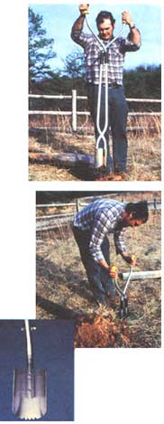
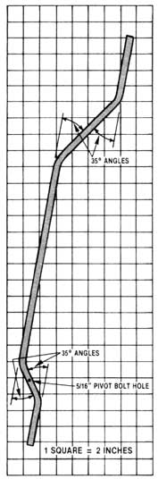

An efficient posthole digger is pretty much a necessity for most homesteaders . . . yet once the conventional pole-handled scooper reaches a certain depth (usually one that's just shallow enough to be impractical), the hole it creates begins to take on a funnel shape, thus requiring extra fill and making it more difficult to "plant" the post securely.
This happens, of course, because the straight handles on a standard digger splay outward when the tool's jaws are closed. However, the problem isn't unsolvable: By simply bending double offsets into a pair of metal handles, then joining those arms near the bottom with a pivot bolt, you can make a scoop borer that-because it works on a scissors principle-is capable of digging a true 6"-diameter hole to a depth of almost 3-1/2 feet!
Better yet, the cost of the homemade tool shouldn't total much more than $9 (store-bought units run about $27), and most folks could probably wrap the whole project up in an hour or so.
To put together your own "slim-jim" posthole digger, you'll need one 10-foot section of 3/4" electrical metallic tubing (E.M.T.), four bicycle handgrips, a 2"diameter steel ring, four 1/4" X 1-1/4" carriage bolts, a 5/16" X 2" machine bolt, two 5/16" flat washers, and a 7" length of 4" E.M.T. (You can probably obtain this last item as leftover scrap from an electrical contractor . . . or you could substitute a section of plain 4" steel pipe.)
Once you've located all the materials, get out your hacksaw, a drill, a 1/4" and a 5/16" bit, a ruler, a felt-tipped pen, a pocketknife, and-if you have access to one-a conduit bender. (If you can't borrow or buy this useful tool, you may be able to form your handles by placing them inside a long, snug-fitting tension spring-or by filling them with sand and capping their ends-and then carefully bending them around a convenient pipe or pole.)
The first step, of course, is to make the 35° arcs in the handles as indicated in our illustration (each bar should be cut to a length of 60", then bent into shape). This will give you a pair of offset shanks with 7" grip ends, 9-long upper offsets, 24" midlengths, 3" lower offsets, and 5" of leg to serve as scoop mounts. (Just for reference, about 3" will be taken up by each 35° bend.)
Next, use your hacksaw and cut the section of 4--diameter tubing in half lengthwise, and using our photo as a guide-mark a cutting line at one end of each "semiround" in preparation for forming the individual scoops. Each one has three teeth in its tip (made by cutting 3/8" equilateral triangles from the center of the "biting" edge), and the corners are rounded to create a spade shape.
Before fastening the scoops to their legs, it'd be a good idea to join the handles together, at the lower offsets, with your 5/16" bolt. When drilling the pivot holes, make sure the tubes are parallel and centered at the junction . . . then you can go on to mount the shovels by positioning them against the legs -so the teeth are about 3 inches from the ends of the tubes-and securing each half's carriage bolts (these should be placed about 2 inches apart).
The rest is easy: Cut the closed ends from one pair of handgrips, and-after you've soaped the E.M.T. well-slide them over the metal handles to a point just below the upper offsets. Next, slip the 2" steel ring over both tubes, and finish by capping the exposed shafts with your remaining two grips. (The restraining ring will prevent the steel shanks from separating and pulling against the pivot joint during digging and twisting, and the upper caps will serve as insulation against electrical shock. The two lower sleeves simply act as stops to prevent the ring from sliding down the tool's midlength section.)
We've discovered that-in most types of soil -this tool does a pretty fair job of cutting a straight and narrow shaft. But, should you require more "heft" for those tougher jobs, it wouldn't be too difficult to plug the conduit handles at their base and then fill them with sand-or better yet, wet concrete mix to give mass and rigidity to the implement. Either way, though, your homemade hole digger will be well suited for a truly "boring" job.
|
 |
 |
|